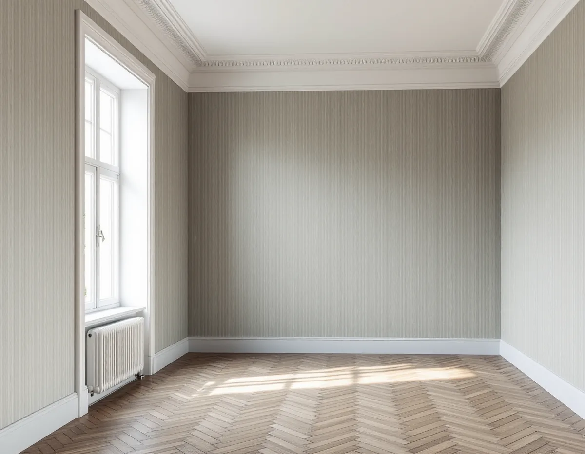
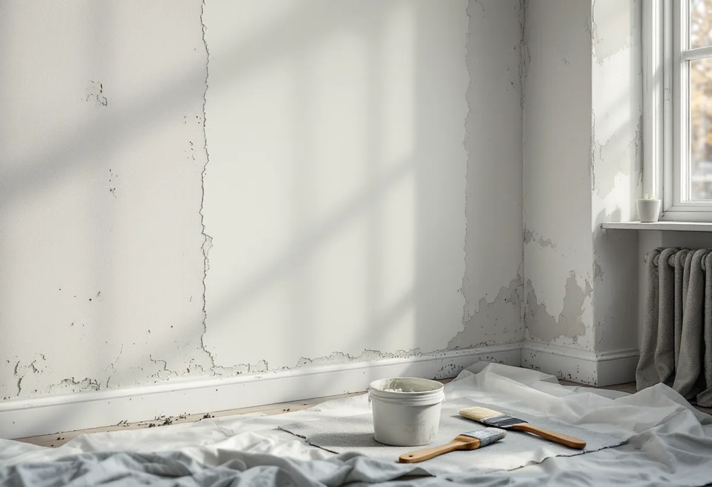

Platsbesök
Vi provar väggen: kritar den, sitter gamla lager fast och var behövs lagning?

I ett stenhus från sekelskiftet i Vasastan kan den släta väggen vara puts på murverk, och under färgen eller tapeten kan det sitta ett gammalt utjämningslager som inte vill bära något nytt.
Beskriv jobbet kort.
Något blev fel. Kontrollera uppgifterna eller ring 08 12 410 276.
Vi tittar på jobbet på plats innan du får offert.
Du ser vad som ingår och vad det kostar.
Vi drar av ROT direkt och sköter ansökan.
Geal Entreprenad AB, Bromma. Org.nr 559303-7566.

Geal Entreprenad AB tapetserar i Vasastans bostadsrätter, och det mesta av arbetet görs innan första våden kommer upp: vi provar väggen, lagar den och förlimmar.
Översiktsplanen kallar de täta kvarteren från 1870–1930 för den klassiska stenstaden. Under 1800-talets andra hälft tredubblades befolkningen till 300 000 vid sekelskiftet, och hyreshusen som byggdes då är normalt fem våningar höga med dekorerade fasader i puts eller natursten. Planen beskriver också att inre modernisering prövas enligt plan- och bygglagens varsamhetskrav, och att många hus har låg klassificering, gul klass, eftersom de förändrats sedan de byggdes.
I dag är nästan alla lägenheter bostadsrätter. Områdesfakta för Östra Matteus räknar 7 680 bostäder 2025, varav 5 593 bostadsrätter och inga i småhus. Den som tapetserar gör det alltså i regel mitt i ett hus med grannar på alla sidor.
Riksantikvarieämbetet beskriver att det förr, innan sandspacklet kom, var vanligt att limfärg användes som utjämnande lager på puts under tapeterna. Det kallades kridering. Svenska Byggnadsvårdsföreningen skriver att dålig vidhäftning kan befaras i hus från 1920–1950-talen, där väggarna underbehandlades med lim och krita, och att sandspackel började användas vid mitten av 1950-talet.
Limfärg är enligt Riksantikvarieämbetet känslig mot fukt, och nytt klister är blött. Därför provar vi först med en fuktig svamp eller en remsa tejp på en undanskymd yta. Kritar det, eller följer det gamla lagret med, behöver det tas bort eller bindas innan vi sätter upp ny tapet.
Byggnadsvårdsföreningen har svarat på hur en frilagd putsvägg i ett hus från 1895 förbereds, sedan lösa tapeter och tidningspapper ångats bort. Hål lagas med väggspackel. Sedan grundas väggen med tapetklister som spätts ut med 40–50 procent vatten och får torka, och därefter klistras en täckpapp, så kallad målarpapp, i 60 centimeters bredd upp på väggen och får torka innan den nya tapeten sätts upp.
Föreningen påpekar att vassa korn och toppar efter dålig slipning eller orent klister syns genom tapeten mer än åsar och gropar, så slipningen är viktigare än man tror. Har väggen en gammal tapet med bronstryck som ska sitta kvar under den nya grundas den med alkydfärg eller shellack, så att trycket inte slår igenom.
Ska väggarna bara målas finns mer under målare. Det trägolv som ofta ligger i samma rum beskrivs under golvläggare i Vasastan.
Kulturen i Lund beskriver hur jugendstilen slog igenom på bred front i Sverige i början av 1900-talet, med växtmönster och slingrande stjälkar som tidiga mönster och stelare ornament senare. Tapeter fanns då i alla prisklasser och nådde nästan alla svenska hem. Samtidigt förespråkade radikala kretsar ljus och luft i hemmen, och Ellen Key föreslog att man skulle köpa de billigaste tapeterna och sätta dem med mönstret mot väggen och den ljusa baksidan utåt.
Vill du ge en sekelskifteslägenhet en tapet som hör till huset finns det i dag tillverkare som tagit upp äldre mönster i sina kollektioner, skriver Kulturen. Hittar vi rester av en äldre tapet bakom en list eller ett element tar vi vara på biten, så att du kan jämföra.
Bostadsrättslagen 7 kap. 9 § säger att den som bor i lägenheten ska se till att grannarna inte utsätts för störningar som är skadliga för hälsan eller annars försämrar deras bostadsmiljö så att de inte skäligen bör tålas. Den säger också att man ska rätta sig efter de särskilda regler som föreningen meddelar. Har föreningen regler om tider för renovering följer vi dem, och vi bär ut rester och emballage utan att lämna dem i trapphuset.
En ny tapet nämns inte bland de åtgärder som enligt 7 kap. 7 § kräver styrelsens tillstånd, som ingrepp i bärande konstruktion eller ändrade ledningar. Har lägenheten särskilda kulturvärden kräver lagen dock tillstånd för åtgärder som påverkar dem, och det kan gälla en bevarad tapet.
Vi provar väggen: kritar den, sitter gamla lager fast och var behövs lagning?
Nedtagning, lagning, förlimning, täckpapp och uppsättning står som egna poster.
Golv, element och fönsterbänkar täcks, och vi planerar bärandet i trapphuset.
Lösa lager ångas bort, putsen lagas och väggen förlimmas och får torka.
Tapeten sätts upp våd för våd från en lodlinje, med passning av mönstret.
Överbliven tapet lämnas till dig och skarvarna går vi igenom tillsammans.
Att tapetsera ger rotavdrag i en bostadsrätt enligt Skatteverket, så länge arbetet görs innanför bostadens tak, väggar och golv. Arbete i trapphus och andra gemensamma utrymmen ingår inte.
Avdraget är 30 procent av arbetskostnaden, högst 50 000 kr per person och år och högst 75 000 kr tillsammans med rutavdrag. Material som tapet och klister ger inget avdrag, och inte heller resor. Avdraget dras direkt på Geals faktura.
Väggens skick styr mest: hur mycket som ska ångas bort, om putsen behöver täckpapp och hur många rum som tapetseras. Efter ett gratis platsbesök får du ett skriftligt kostnadsförslag.
Fasad, fönster och invändig målning.
Målare i Stockholm →Takbyte, takbesiktning och plåtarbeten.
Takläggare i Vasastan →Stenstad, Röda Bergen och föreningarnas tak.
Takrenovering i Vasastan →Flytta badrummet, ny stam och frånluft.
Badrumsrenovering i Vasastan →När en lokal blir bostad.
Byggföretag i Vasastan →Fasadmålning för föreningar.
Fasadmålning i Vasastan →Ställning, tillstånd och etablering på gatan.
Fasadrenovering i Vasastan →Storgårdskvarteren och 20-talets fönster.
Fönsterbyte i Vasastan →Fönster i Birkastadens jugendhus.
Fönsterrenovering i Vasastan →Springor, kupning och underhåll.
Golvläggare i Vasastan →Stav- och fiskbensparkett.
Golvslipning i Vasastan →Kokvrån som blir kök.
Köksrenovering i Vasastan →Snickerier, fönster och sprucket spackel.
Målare i Vasastan →Takfönster, vindar och plåt.
Plåtslagare i Vasastan →Öppna upp, nya dörröppningar och listverk.
Snickare i Vasastan →Takbyte för föreningar och fastighetsägare.
Takbyte i Vasastan →Hela lägenheten, med husets värden kvar.
Totalrenovering i Vasastan →Eller ring 08 12 410 276, mån–fre 08–17.
Beskriv jobbet kort.
Något blev fel. Kontrollera uppgifterna eller ring 08 12 410 276.